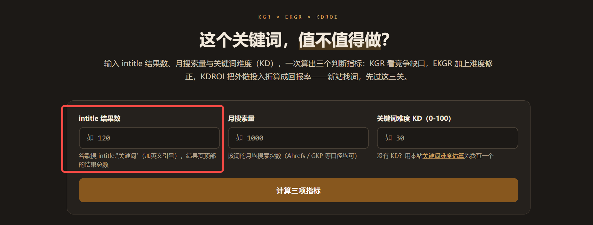
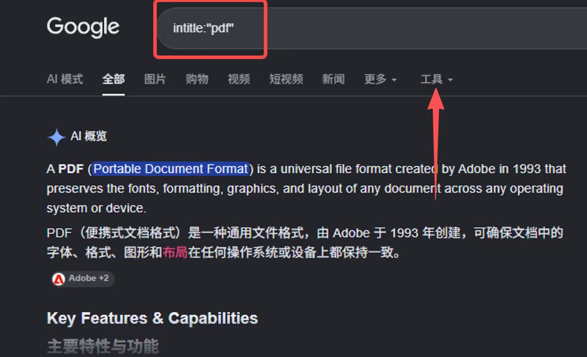

查 intitle 结果数不需要额外的数据站：安装 AITDK 插件后它会自动显示，不装插件时手动点击 Google 搜索页的「工具」也能看到。
问题出在哪
小楼的场景是给关键词打分：这个工具要输入 intitle 结果数、月搜索量和关键词难度 KD，才能算出三项判断指标。他卡在第一个输入框，因为不知道该填什么、去哪儿看。

于是他去 Google 搜了 intitle:"pdf"，但页面被 AI 概览和搜索结果占满，找不到结果数显示在哪里，就把截图发到群里问「intitle 结果数怎么查呀」「显示在哪里呢」。卡住的地方不是不会写查询语句，而是不知道数字藏在页面哪个位置。
两种查法
- 安装 AITDK 插件：它会自动把结果数显示出来，不用自己找。
- 不装插件时：在 Google 搜索结果页手动点击「工具」，也能看到。

这个数字在判断什么
intitle 把关键词限定在网页标题里，返回的结果数因此常被当作「有多少页面标题正对着这个词」的粗略刻度，用来判断一个关键词在标题层面的拥挤程度。这次聊天只解决了「在哪里看」这一步，具体的数值门槛和判断标准没有展开。
原始对话
2026年10月28日 22:09 至 22:11，2 位参与者，共 9 条消息。记录中的 3 张截图已按内容补在正文对应位置，这里保留原始图片文件名。
聊天记录（9 条）
参与者 2 人：小楼、哥飞 · 时间范围 2026年10月28日 22:09 至 2026年10月28日 22:11 · 原始 9 条，保留 9 条